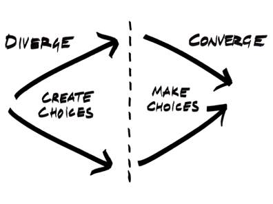

Código expresivo
El valor de poder decir lo mismo de muchas maneras
Y la importancia de decirlo de la manera correcta
Fernando E. Silva Jacquier
fesilvajacquier
Tech Lead en Boxful
Consultor
Teacher en Le Wagon
> La aplicación me está crasheando un montón.
Todos los miércoles a las 08.00 horas
users.each do |user|
UserMailer.with(user: user).payment_reminder.deliver_later
end
La solución
# ❌ Carga todo en memoria
users.each do |user|
# ...
end
La solución
# ✅ Procesa en batches
users.find_each do |user|
# ...
end
each
👤👤👤👤👤👤👤 👤👤👤👤👤👤👤 👤👤👤👤👤👤👤 👤👤👤👤👤👤👤 👤👤👤👤👤👤👤 👤👤👤👤👤👤👤 👤👤👤👤👤👤👤 👤👤👤👤👤👤👤vs
Una charla sobre performance
Ya está, con esto puedo hacer una charla sobre los costos de lo idiomático
Poco después encontré el segundo input de la charla
Qué obtenemos: hay o no hay usuarios
users.present?
# => User Load (286.4ms)
# => SELECT "users".* FROM "users"
=> true
Qué obtenemos: hay o no hay usuarios
Cómo lo obtenemos: 🤔
users.present?
# => User Load (286.4ms)
# => SELECT "users".* FROM "users"
=> true
users.any?
# => User Exists? (0.8ms)
# => SELECT 1 AS one FROM "users" LIMIT $1 [["LIMIT", 1]]
=> true
Qué obtenemos: cuántos usuarios hay
users.count
# => User Count (4.6ms) SELECT COUNT(*) FROM "users"
=> 32107
Qué obtenemos: cuántos usuarios hay
users.count
# => User Count (4.6ms) SELECT COUNT(*) FROM "users"
=> 32107
users.length
# => User Load (230.2ms) SELECT "users".* FROM "users"
=> 32107
users.length
=> 32107
Qué obtenemos: cuántos usuarios hay
Cómo lo obtenemos: 🤔
users.count
# => User Count (4.6ms) SELECT COUNT(*) FROM "users"
=> 32107
users.length
# => User Load (230.2ms) SELECT "users".* FROM "users"
=> 32107
users.length
=> 32107
users.size
# => User Count (5.3ms) SELECT COUNT(*) FROM "users"
=> 32107
users.size
=> 32107
Mismos takeaways
- El cómo es tan importante como el qué
- El contexto es importante
Un esfuercito más
Busqué más ejemplos...
[1, 2, 3].all? { |number| number.positive? }
=> true
[1, 2, -1].all? { |number| number.positive? }
=> false
[1, 2, 3].all? { |number| number.positive? }
=> true
[1, 2, -1].all? { |number| number.positive? }
=> false
[].all? { |number| number.positive? }
=> true
Es una verdad vacua
Pero todavía no tenía suficiente madera para la charla
Así que dejé descansar a la idea un rato.
Y cuando volví a ella, me acerque desde más lejos...
Lo valioso de la expresividad - Prototipaje rápido

> No dibujo. Empiezo haciendo todo tipo de manchas. Espero lo que llamo "el accidente": la mancha desde la cual saldrá el cuadro. La mancha es el accidente. Pero si uno se para en el accidente, si uno cree que comprende el accidente, hará una vez más ilustración, pues la mancha se parece siempre a algo.Entrevista a Francis Bacon
<%# La mancha inicial... %>
<% if current_user.payments.present? %>
<%# Something... %>
<% end %>
<%# La mancha inicial... se parece a algo.. %>
<% if current_user.payments.any? %>
<%# Something... %>
<% end %>
Más allá de la primera mancha
# Spotify Mix Playlists: Assuming we have a history of played songs for a user,
# we have song recommendations via nearest neighbor search,
# and we have categorizations (genre, mood, era, instrumental/vocal, cultural/regional, theme),
# let system admins create mix templates based on music categorizations
# and then generate refreshable custom playlists for each user.
class User
has_many :playlists
has_one :history
end
class History
has_many :listens
has_many :tracks, through: :listens
end
class History::Listen
belongs_to :history
belongs_to :track
end
class Track
has_many :categorizations
has_many :categories, through: :categorizations
end
track.inner_joins(Track::Category.genres).nearest(100)
Track::Category.genres.where(value: ["pop", "hiphop"])
Track::Category.eras.where(value: ["80s", "90s"])
class Track::Category
has_many :categorizations
has_many :tracks, through: :categorizations
belongs_to :details
end
class Track::Category::Categorization
belongs_to :track
belongs_to :category
end
class Playlist
end
class Mix::Template
has_many :categories
def build_for(user)
from_own_history = user.history.tracks.ordered_by_popularity.joins(:categories).where(categories:).limit(100).flat_map do |track|
[track, track.nearest(10)]
end.uniq.first(100)
if from_own_history >= 100
from_own_history
else
Track.ordered_by_popularity.joins(:categories).where(categories:).limit(100).flat_map do |track|
[track, track.nearest(10)]
end.including(from_own_history).uniq.first(100)
end
end
end
class Mix::Build
belongs_to :template
belongs_to :user
has_many :links
has_many :tracks, through: :links
def regenerate
update! tracks: template.build_for(user)
end
end
class Mix::Build::Link
belongs_to :build
belongs_to :track
end
Lo valioso de la expresividad - Reducción de la carga cognitiva y feedback loops más cortos
Carga cognitiva
 https://github.com/zakirullin/cognitive-load
https://github.com/zakirullin/cognitive-load
Buenas interfaces = menos carga cognitiva
# Así
user_ids = []
for i in 0...users.length do
user_ids.push(users[i].id)
end
# o así
users.ids
Maximizing Developer Effectiveness
Por Tim Cochran
DevEx: What Actually Drives Productivity
Por Abi Noda (DX), Margaret-Anne Storey (University of Victoria), Nicole Forsgren (Microsoft Research), Michaela Greiler (DX)
¿Cómo elegir la correcta?
La expresividad puede ir en detrimento de la uniformidad
# A
def disability_amount
return 0 if @seniority < 2
return 0 if @months_disabled > 12
return 0 if @is_part_time
# Compute the disability amount...
end
# B
def disability_amount
return 0 if @seniority < 2 || @months_disabled > 12 || @is_part_time
# Compute the disability amount...
end
# C
def disability_amount
return 0 if ineligible_for_disability?
# Compute the disability amount...
end
Refactoring
Ruby Sur - Refactoring en Ruby: Elevating Code Quality Through Community And Practice
La expresividad puede ir en detrimento de la confiabilidad
# ...
if users.all?(&:certified?)
proceed_with_project!
end
# pero si users.blank? == true,
# el proyecto se ejecuta sin verificar nada
Testing
La expresividad puede ir en detrimento de la performance
# ...
@unread_count = Current.user.emails.unread.length
# ...
Instrumentación y Observabilidad
Divergent and Convergent Thinking
Por Mural
Conclusión
Escriban código como se les cante
Pero sepan que hay maneras más costosas que otras